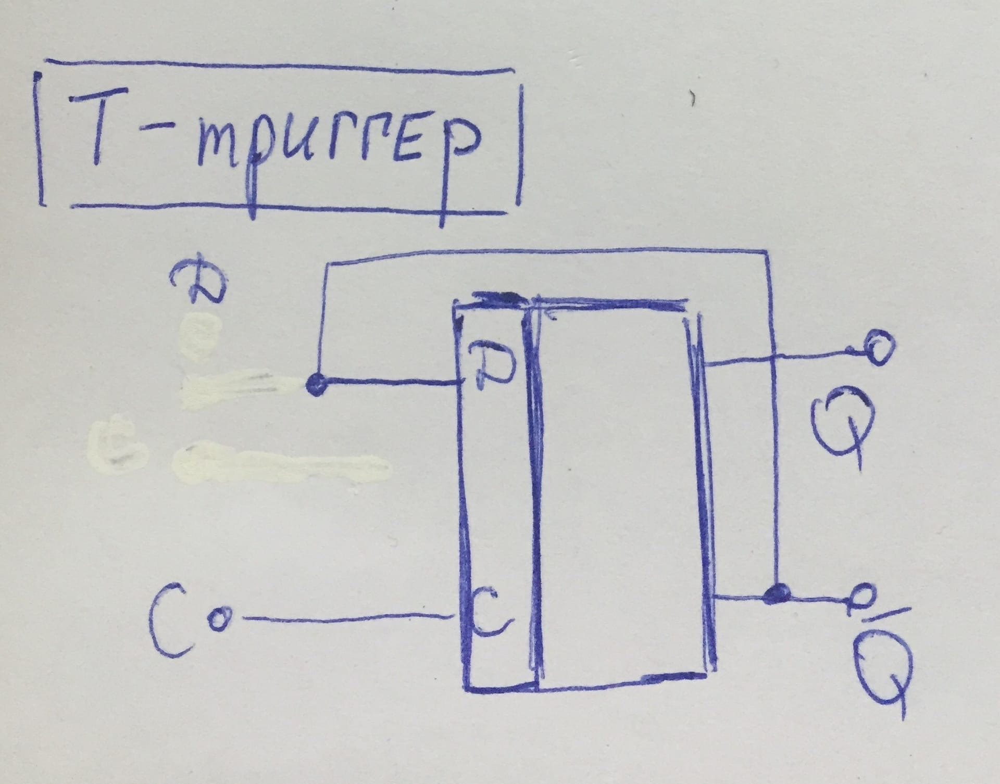

Для решения данной задачи:
1)Возьмем построенный на JK-микросхеме D-триггер и будем его менять.

2) Отсоединим вход D,
а выход с Q-инверсного отправим на вход J.
3)В результате построения на Tina мы ожидаем увидеть, как Q изменяет состояние с приходом импульса на С,
т.е. получить счетчик импульсов.

ИТАК для решения задачи №3 будем придерживаться следующего плана:
Разберем работу и построение T-триггера на микросхеме JK
 |

|
 |